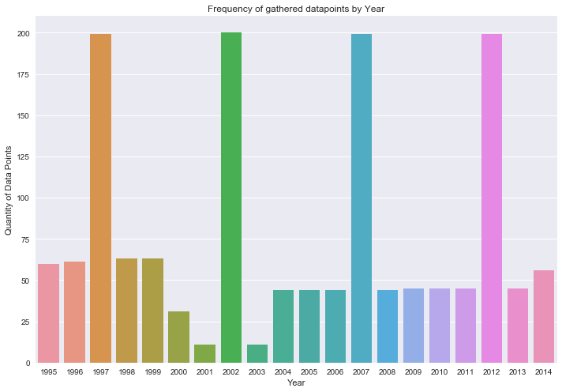

Financial Spending Model
A three month service learning project for the Idaho Policy Institute(IPI); this is a project I completed for my graduate data science course at Boise State. This Project successfully makes use of Idaho's municipal government financial data by providing insightful models to augment the decision making process. This specifically correlates government expenditure and crime allowing for the optimization of all future investments.
View the Project Repository for a deeper dive into the code
Meeting the Client:
Dr. Cheong Kim from the Idaho Policy Institute has assembled a file containing data on finances, population, and crime for virtually every city in Idaho. Dr. Kim and his colleagues are social scientists performing research to assist decision makers in answering the difficult decisions of the day, and helps state and local government leaders navigate change and forge strong directions for a better Idaho.
Objective of the Project
With the desire to augment the decision making process for state and local government bodies, Dr. Kim sought to improve the investment process of government funds. It was asked that my team and I identify expenditure trends relation to various crime statistics. In doing so these decison makers would have a more optimized ability to allocate resources.
Initial Database
Database Overview
- Scope: municipalities in Idaho, 1995 - 2014/5
- 23 non-fiscal variables (e.g., government employees, crimes, Metro/Micro SA status, population, pop density, nonprofits, and businesses)
- 576 fiscal variables, which derived from the Government Finance Database produced by Pierson, Hand, and Thompson (2015)
Idaho Municipal Database


- Scope: counties in Idaho, 1995-2015/6
- Currently, 11 variables (e.g., crimes, nonprofits, businesses, and income) + populations and pop density are being added by Jeff’s class.
- A large number of fiscal variables will be incorporated from the Government Finance Database produced by Pierson, Hand, and Thompson (2015) down the road.
Idaho County Database


- Idaho Municipal/County Databases: Fiscal variables for Idaho derived from the Government Finance Database produced by Pierson, Hand, and Thompson (2015) who compiled the U.S. Census Bureau’s government financial statistics.
- The Census Bureau’s government financial statistics are created by merging two series of financial information: Census of Government Finance and Employment Data (years ending 2 and 7) and Annual Survey of State & Local Government Finances (in-between years).
- Dollar amounts are expressed in thousands of nominal dollars (Pierson et al. 2015, p.3).
- This database is publicly available
- Comprehensive database in one standardized format in one file
- Basic but critical measures are provided, which were unavailable in the original Census Bureau’s government financial statistics; e.g., total revenue, total expenditure among others.
- Self-reported numbers: for best accuracy, actual government budget doc/CAFR should be the best. So, if you are interested in a small number of governments (say up to 10) or current budget numbers, go to the government websites and obtain the actual dollar numbers. But, if you are interested in comparing many governments (say 100) at the same time and creating an average trend chart from them, collecting data would be time-consuming. In this case, this database could be a good source.
- Overrepresentation of large municipalities in-between years.
- Lots of missings values.
Government Finance Database
Advantages:
Limitations:
Data Manual
The data was stored and presented to us as csv files. There were 201 different csv files each of which described a city in Idaho and were structured like so:
- Spanning 20 years (unbalanced)
- 618 columns describing finance, crime, population etc.
- Financial data in nominal dollars
- Unique values for county & city data
CSV Files
Each of these 618 varaibales were encoded and required a manual to understand what was being represented. I am unfortunatly not at liberty to present this manual at this time however, I will fully describe all variables used in this documentation.
Importing new Data
The provided dataset contained a lot of missing values so we felt it important to add more features that possessed every data point. This was tricky because not only did we have to load data but we had to do it to every csv. To solve this we made a backend funtion that combined all of the csv files into one. After importing we merged these tables with the one provided by IPI, or in one case made an additional table. Listed below are all additional sources.
- U.S. Census Bureau (USC)
- Willamette Government Finance Database (GFD)
- Federal Bureau of Investigation (FBI)
- Bureau of Labor Statistics (BLS)
Data Sources
Provides population measurments at various entity levels including state, county and city
Provides goverment cash flow information for each city/county in Idaho
Describes various crime variables
Allows for adjustment for inflation and provides employment related statistics
Backend Functions We Created
We created many functions and methods to simplfy our work and all future work. One of these functions converts from nominal to real dollars. There are many plotting functions such as heat maps, matrices of distributions and scatter plots, choropleth maps , etc. These methods and functions are all stored within the support folder and have their own documentation.
For a deeper dive into the code view the entire support folder, or specifically view one of folders three files listed below.
- Load Data
- Plotting & Graphing
- Utilities
Contents of Support Folder
Provides functions meant to quickly pull slices of the csv. Acting as a query the functions within this file can quickly return slices such as gps or employment data.
During our exploratory analysis we created functions for plots (e.g. histograms, heatmaps, choropleths) so that they may be reused.
A vast range of functions meant for pre-processing, this file has capabilities such as normalization and converting monetary values from nominal to real dollars.
Data Exploratory & Cleansing:
Once we had a base understanding of the database it was time to get hands on with the data. Quickly it became apparent that most of the described values were missing. With concerns of removing valuable insights, there were enough missing values that dropping rows, columns nor setting thresholds provided solutions.
We then began to sort our variables trying to find columns with the least missing values. Using the sorted list we identfied some values we believed to be essential in describing the required objective. Using the essential fields containing few missing values, we began to look for a pattern.
Since we are dealing with data having time series attributes, we need balance in our data from year to year. Below is a plot showing the quantity of populated values over each year.
Shown from this graph it is clear that our data has consistency with 5 year intervals. This specific plot only represents population but we found this pattern to be consistent across most variables.
Dimensionality Reduction
Using this information we will drop data for every year except for 1997, 2002, 2007 & 2012.
Other than the time series we also had an axis for cities/counties. There were many cities with very little data so we concluded that those cities should be removed. To do so we dropped any city that did not contain data for the four years we intended to use in our model. Doing so put our set at 59 of the original 200 cities. This reduction was justified because the cities that were dropped contained such little data there was likely no useful insight. Similiarly counties had about 10% the amount of data as cities so we ultimatley chose to only pursue cities.
We have greatly improved the usefulness of our data however we still have many variables missing large amounts of data. To maintain further integrity we chose to drop all fields that do not have a populous of at least 87%. This ratio was chosen to mitigate interpolation while maintaining most fields.
Finishing Preprocessing
Train Validation Test Split
First Let us split the data using 25% for our test set and the remaining for training. Since we do not want to perform interpolation on our test set we will drop all null records and set this set aside.
Interpolation
Finally we have reached the final data set that we intend to input into our models. This input data is increadibly important and is the driving force of our models. Knowing the usefulness of every data point we will perform a simple linear interpolation on our points to predict the missing values with a relatively low varrience.
Objectives for our Models
The amount of columns contained within the set describing crime amounted to 7 however there were over 500 variables describing financial revenue or expenditure. Using this knowledge we thought it best to attempt to describe crime using financial information as our independent variables (along with additional misc. data). We chose to do this so that we would not limit the features available for our models along with the ability of this type of model to provide a good description of the relation between government finances and crime. The variables describing crime were quantities of occurances so to use this as our dependent variable we needed to construct a regression model.
Selecting the OLS Time Fixed Effects Model
Since this a panel dataset we wanted to account for the serial correlation resulting from the time series. Additionally we thought a linear model the easiest to interpret and understand the inner workings of the data itself. This lead us to a time effects model for our initial build, however the world is not linear and features will likely contain heteroskedasticity so we will need to test for this using the Breusch-Pagan Test. If the tests yield results suggesting a linear model to be biased we will move forward with a non-linear approach.
After evaluating many models I concluded that an OLS Time Fixed Effects model was the best approach. This was done because it would account for serial correlation and provide a regression summary without additional code. Additionally this could be used as a base model with a short build time, allowing for better allocation of time spent developing.
What is OLS and it's Assumptions
The OLS approach to regression is unbiased therefor making it reliable for analysis, however our data has to meet some conditions refered to as assumptions.
- Error has a Conditional Mean Zero
- Features are identically independently distributed
- No Perfect MultiCollinearity
- Large Outliers are Unlikely
Least Squares Assumptions
Provides population measurments at various entity levels including state, county and city
Provides goverment cash flow information for each city/county in Idaho
Describes various crime variables
Nonzero finite fourth moments
Validating that OLS is BLUE
Refering to the OLS assumptions listed above we need to test our data to make sure all of the assumptions are true. If the assumptions are true about our data then it is said Ordinary Least Squares (OLS) is the Best Linear Unbiased Estimate (BLUE). If these assumptions are not true about our data then this approach will be biased and we will nedd to use a different approach.
First a quick Hyperparameter
In the next step we wish to test for independance accross our features utilizing the SelectKBest function within Scikit-Learn's library. To do this we must tell the function a value for K, representing the amount of features desired. Putting a random number is not overly effective so we will attempt to optimize K by using a Lasso regression. This regression works by reducing the coefficient of features to zero if they are not usful to the model. Using this we will simply set K to equal the number of regressors from the Lasso.
Chi Squared Test
Having solved the hyperparameter K we then ran a Chi Squared test. The purpose of this test is to validate that our features are independant of eachother. SelectKBest will performed a Chi Squared test to identify feature independance. Following this the function will select the K best features for our dependant variable.
Handling MultiCollinearity
A few of these features are linear combinations of one another so we will remove these and in doing so will remove the multicollinearity. In addition we have some linear combinations within our records so we will fix those as well. Finally our data has passed our assumptions and we are ready to build our model.
Time Fixed Effects Regression Model
Having selected "Total Theft" as our dependant variable we felt it the best to generally represent crime. The data for the model describes that of 59 cities spanning 20 years (divided into 4 intervals, every 5 year). Additionally there were 188 records for each of the seven features.
Summarizing Results

From here this model appears to be a good representation of our data. Using this summary our P-value is 0.0000 which is great for now, but later we will need to re-evaluate this number with unseen data. In addition to being statistically significant we also have an R Squared value of 0.9019, so we should be able to say that the model is a good description of the data.
Identifying the Correlation

This model appears to be a good representation of the data, however our first 6 regressors are all similiar and provide little insight. The reason for this limited insight is due to the fact that as cities grow in size they will have more revenue and therfor expenditure. Crime is highly correlated to population renduring little insight from these variables, however it does show that our model is working logically.
The Signal within the Noise
The real insight come from the regressor Total_LTD_Out (Total Long Term Outstanding Debt). A closer look at this regressor shows that it is the most statistically significant with a P-value of 0.0000 and has the lowest varrience with a standard error of 0.0025. With the ultimate objective of efficiently reducing crime this regressor shows promise towards an effective strategy to do so. By validating the correlation between long term debt and total theft for cities in Idaho, decision makers are now able to better invest resources when combatting theft.
Conclusion
I was provided a database comprised of financial expenditure/revenue and crime for various cities in Idaho. My client, the Idaho Policy Institute, desired to know how better to allocate resources to better reduce crime. Throughout my analysis I found the data to contain missing values, was unbalance along the temporal axis and was overall sparse. However, after some data scrapping, dimensionality reduction and minimal interpolation; I was successful in cleaning the data having greatly reduced the noise.
I then used a non biased OLS time fixed effects regression model to further understand the data. Having made a statistically significant and reliable model I was able to draw a clear insight. Many of the features were that of general/overall expenditure and revenue, thus were not only largely correlated to crime but also population. This is difficult because logically, more people means more total crime even if the rates are identical.
Taking another look at the model I then noticed that the most statistically significant feature (by a large margin) was that of "long term outstanding debt." The correlation between long term debt of a city and the associated crime provided invaluable insight towards the client's desired objective, reducing crime. Using this information government bodies are better able to allocate resources; by removing the "pigeon superstition" associated to investing funds, my analysis saved local governments thousands of dollars.